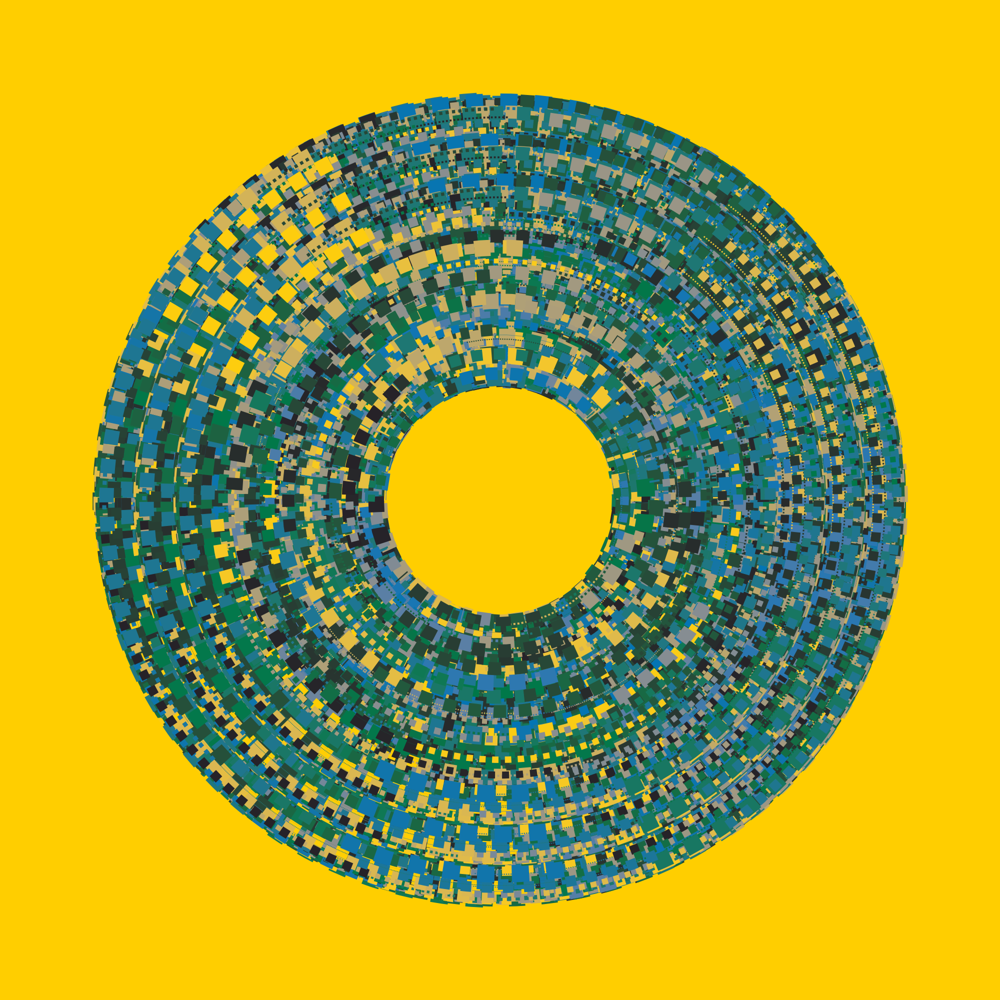

![]()
library(tictoc)
tic()
donut(seed = 100)
toc()5.277 sec elapsedOkay. So I wrote a simple package for multi-threaded tasks queues in R this week. It wasn’t intentional, I swear. I was just trying to teach myself how to use the callr package,1 and making sure I had a solid grasp of encapsulated object-oriented programming with R6. Things got a little out of hand. Sorry.
And let’s be very clear about something at the outset. If you want to do parallel computing in R correctly, you go look at futureverse.org. The future package by Henrik Bengtsson provides a fabulous way to execute R code asynchronously and in parallel. And there are many excellent packages built on top of that, so there’s a whole lovely ecosystem there just waiting for you.2 Relatedly, if the reason you’re thinking about parallel computing is that you’ve found yourself with a burning need to analyse terabytes of data with R then babe it might be time to start learning some R workflows using Spark, Arrow, Kubernetes. It may be time to learn about some of those other eldritch words of power that have figured rather more prominently in my life than one might expect for a simple country girl.3
My little queue package is a personal project. I happen to like it, but you should not be looking at it as an alternative to serious tools.
That’s been said now. Good. We can put aside all pretension.
Let’s say I have a generative art function called donut(), based loosely on a teaching example from my art from code workshop. The donut() function takes an input seed, creates a piece of generative art using ggplot2, and writes the output to an image file. This process takes several seconds to complete on my laptop:
library(tictoc)
tic()
donut(seed = 100)
toc()5.277 sec elapsedHere’s the piece, by the way:

That’s nice and I do like this piece, but generative art is an iterative process and I like to make many pieces at once to help me get a feel for the statistical properties of the system. Waiting five or six seconds for one piece to render is one thing: waiting 8-10 minutes for 100 pieces to render is quite another. So it’s helpful if I can do this in parallel.
library(queue)Here’s how I might do that using queue. I designed the package using R6 classes – more on that later – so we’ll be working in the “encapsulated” object oriented programming style that is more common in other programming languages. The first step is to initialise a Queue object, specifying the number of workers we want to use. I’ll use six:
queue <- Queue$new(workers = 6)When I do this, the queue package starts six R sessions for us, and all my computations will be done in those R sessions. Under the hood, all the hard work of managing the R sessions is being done by the wonderful callr package by Gábor Csárdi4 – the only thing that queue does is provide a layer of abstraction and automation to the whole process.
Next, I’ll add some tasks to the queue. Queue objects have an add() method that take a function and a list of arguments, so I can do this to push a task to the queue:
queue$add(donut, args = list(seed = 100))When the queue executes, it will be in a “first in, first out” order,5 so this task will be the first one to be assigned to a worker. Though of course that’s no guarantee that it will be the first one to finish!
Anyway, let’s load up several more tasks. There’s some weird aversion out there to using loops in R, but this isn’t one of those situations where we need to worry about unnecessary copying, so I’m going to use a loop:
for(s in 101:108) queue$add(donut, list(seed = s))So now we have nine tasks loaded onto a queue with six workers. To start it running I call the run() method for the queue. By default, all you’d see while the queue is running is a spinner with a progress message telling you how many tasks have completed so far, how many are currently running, and how many are still waiting. But I’ll ask it to be a bit more chatty. I’ll call it setting message = "verbose" so that we can see a log showing the order in which the tasks completed and time each task took to complete, in addition to the total time elapsed on my system while the queue was running:
out <- queue$run(message = "verbose")→ Done: task_5 finished in 3.18 secs→ Done: task_2 finished in 5.78 secs→ Done: task_6 finished in 5.78 secs→ Done: task_4 finished in 7.34 secs→ Done: task_3 finished in 8.09 secs→ Done: task_1 finished in 9.46 secs→ Done: task_7 finished in 7.76 secs→ Done: task_9 finished in 6.09 secs→ Done: task_8 finished in 6.92 secs✔ Queue complete: 9 tasks done in 12.7 secsHere are the nine pieces that popped off the queue in 13 seconds:


So it’s a three-step process: (1) create the queue, (2) load up the tasks, (3) execute the tasks. In practice I would probably simplify the code to this:
queue <- Queue$new(workers = 6)
for(s in 100:108) queue$add(donut, list(seed = s))
out <- queue$run()True, I could simplify it further. For example, if I know that I’m always calling the same function and always passing the same the same arguments – just with different values – this could be wrapped up in purrr style syntax, but honestly I’m not sure why I would bother doing that when furrr already exists? I’m not planning to reinvent the wheel, especially not when Davis Vaughn already offers a fully-operational mass-transit system free of charge.
The output object out stores quite a lot of information about the tasks, the results, and the events that occurred during task execution, but most of it isn’t immediately interesting to us (especially when things actually work!) So let’s keep things simple for the moment and just look at the first five columns:
out[, 1:5] task_id worker_id state result runtime
1 task_1 577202 done donut_100.png 9.457713 secs
2 task_2 577226 done donut_101.png 5.782191 secs
3 task_3 577239 done donut_102.png 8.087054 secs
4 task_4 577251 done donut_103.png 7.336802 secs
5 task_5 577263 done donut_104.png 3.183247 secs
6 task_6 577275 done donut_105.png 5.780861 secs
7 task_7 577263 done donut_106.png 7.763061 secs
8 task_8 577226 done donut_107.png 6.921016 secs
9 task_9 577275 done donut_108.png 6.093996 secsThe columns are pretty self-explanatory I think?
task_id is a unique identifier for the task itselfworker_id is a unique identifier for the worker that completed the task (it’s also the process id for the R session)state summarises the current state of the task (they’re all "done" because the queue is finished)result is a list column containing the output from each taskruntime is a difftime column telling you how long each task took to finishAs for the the full output… well… here it is…
out task_id worker_id state result runtime fun args
1 task_1 577202 done donut_100.png 9.457713 secs function (seed) , {, source("donut.R", local = TRUE), donut(seed), } 100
2 task_2 577226 done donut_101.png 5.782191 secs function (seed) , {, source("donut.R", local = TRUE), donut(seed), } 101
3 task_3 577239 done donut_102.png 8.087054 secs function (seed) , {, source("donut.R", local = TRUE), donut(seed), } 102
4 task_4 577251 done donut_103.png 7.336802 secs function (seed) , {, source("donut.R", local = TRUE), donut(seed), } 103
5 task_5 577263 done donut_104.png 3.183247 secs function (seed) , {, source("donut.R", local = TRUE), donut(seed), } 104
6 task_6 577275 done donut_105.png 5.780861 secs function (seed) , {, source("donut.R", local = TRUE), donut(seed), } 105
7 task_7 577263 done donut_106.png 7.763061 secs function (seed) , {, source("donut.R", local = TRUE), donut(seed), } 106
8 task_8 577226 done donut_107.png 6.921016 secs function (seed) , {, source("donut.R", local = TRUE), donut(seed), } 107
9 task_9 577275 done donut_108.png 6.093996 secs function (seed) , {, source("donut.R", local = TRUE), donut(seed), } 108
created queued assigned started finished code
1 2022-12-23 12:27:54 2022-12-23 12:27:54 2022-12-23 12:27:54 2022-12-23 12:27:54 2022-12-23 12:28:03 200
2 2022-12-23 12:27:54 2022-12-23 12:27:54 2022-12-23 12:27:54 2022-12-23 12:27:54 2022-12-23 12:28:00 200
3 2022-12-23 12:27:54 2022-12-23 12:27:54 2022-12-23 12:27:54 2022-12-23 12:27:54 2022-12-23 12:28:02 200
4 2022-12-23 12:27:54 2022-12-23 12:27:54 2022-12-23 12:27:54 2022-12-23 12:27:54 2022-12-23 12:28:01 200
5 2022-12-23 12:27:54 2022-12-23 12:27:54 2022-12-23 12:27:54 2022-12-23 12:27:54 2022-12-23 12:27:57 200
6 2022-12-23 12:27:54 2022-12-23 12:27:54 2022-12-23 12:27:54 2022-12-23 12:27:54 2022-12-23 12:28:00 200
7 2022-12-23 12:27:54 2022-12-23 12:27:54 2022-12-23 12:27:57 2022-12-23 12:27:57 2022-12-23 12:28:05 200
8 2022-12-23 12:27:54 2022-12-23 12:27:54 2022-12-23 12:28:00 2022-12-23 12:28:00 2022-12-23 12:28:06 200
9 2022-12-23 12:27:54 2022-12-23 12:27:54 2022-12-23 12:28:00 2022-12-23 12:28:00 2022-12-23 12:28:06 200
message stdout stderr error
1 done callr-rs-result-8ce3e320ef539 NULL
2 done callr-rs-result-8ce3e6e032153 NULL
3 done callr-rs-result-8ce3e5d32c7ba NULL
4 done callr-rs-result-8ce3e72346af NULL
5 done callr-rs-result-8ce3e4193129d NULL
6 done callr-rs-result-8ce3e42c3653c NULL
7 done callr-rs-result-8ce3e6ecedbfa NULL
8 done callr-rs-result-8ce3e41e0f9e6 NULL
9 done callr-rs-result-8ce3e5a3c4630 NULLOkay so there’s a bit more to unpack here. Let’s take a look…
fun and args columns contain the functions and arguments that were originally used to specify the taskcreated, queued, assigned, started, and finished columns contain POSIXct timestamps indicating when the task was created, added to a queue, assigned to a worker, started running on a worker, and returned from the workercode is a numeric code returned by the callr R session: of particular note 200 means it returned successfully, 500 means the session exited cleanly, and 501 means the session crashedmessage is a message returned by callrstdout and stderr are the contents of the output and error streams from the worker session while the task was runningerror currently is NULL because I haven’t implemented that bit yet lol.I’m going to be honest. Sometimes6 I write bad code when I am exploring a new generative art system. Code that crashes the R session unpredictably. So it would be nice if the queue had a little bit of robustness for that. To be honest, the queue package isn’t very sophisticated in detecting sessions that have crashed,7 but it does have some ability to recover when a task crashes its thread. Let’s keep this simple. I’ll define a perfectly safe function that waits for a moment and then returns, and another function that always crashes the R session as soon as it is called:
wait <- function(x) {
Sys.sleep(x)
x
}
crash <- function(x) .Call("abort")Now let’s define a queue that has only two workers, but has no less than three tasks that are guaranteed to crash the worker the moment the tasks are started:
queue <- Queue$new(workers = 2)
queue$add(wait, list(x = .1))
queue$add(crash)
queue$add(crash)
queue$add(crash)
queue$add(wait, list(x = .1))The queue allocates task in a first-in first-out order, so the three “crash tasks” are guaranteed to be allocated before the final “wait task”. Let’s take a look at what happens when the queue runs:
queue$run()✔ Queue complete: 5 tasks done in 4.3 secs# A tibble: 5 × 17
task_id worker_id state result runtime fun args
<chr> <int> <chr> <list> <drtn> <list> <list>
1 task_1 401728 done <dbl [1]> 0.1239407 secs <fn> <named list [1]>
2 task_2 401740 done <NULL> 2.1264157 secs <fn> <list [0]>
3 task_3 401728 done <NULL> 3.0233221 secs <fn> <list [0]>
4 task_4 401773 done <NULL> 1.9341383 secs <fn> <list [0]>
5 task_5 401792 done <dbl [1]> 0.1577439 secs <fn> <named list [1]>
# ℹ 10 more variables: created <dttm>, queued <dttm>, assigned <dttm>,
# started <dttm>, finished <dttm>, code <dbl>, message <chr>,
# stdout <list>, stderr <list>, error <list>It’s a little slower than we’d hope, but it does finish both valid tasks and returns nothing for the tasks that crashed their R sessions. What has happened in the background is that the queue runs a simple check to see if any of the R sessions have crashed, and attempts to replace them with a new worker whenever it detects that this has happened. It’s not in any sense optimised, but it does sort of work.
Although my confidence in my ability to have a career in tech is at an all-time low, I have to admit that the work I’ve done over the last year has made me a better programmer. I didn’t much effort into writing queue, but the code feels cleaner and more modular than the code I was writing a year ago. Good practices have become habits, I suppose. That’s a nice feeling. I automatically write proper unit tests as I go, knowing that those tests will save me when I need to make changes later. I document properly as I go, knowing that I won’t remember a bloody thing about how my own code works six hours later – never mind six months. And, maybe most importantly of all, my code now seems to have this habit of organising itself into small, manageable abstractions. I have no idea when that happened, because I wasn’t actually part of a software engineering team. I was just the girl who wrote some docs and few little blog posts.8
Here’s what I mean. If you take a look at the source code for the Queue object, it’s actually not very long: the file is mostly devoted to the documentation, and the object doesn’t have very many methods. Honestly, we’ve already seen most of them:
new() creates a new queueadd() adds a task to a queuerun() sets the queue runningIf everything works smoothly you don’t need anything else, so why burden the user with extra details? Sure, there’s a little complexity to these methods which is of course documented on the relevant pkgdown page because I’m not a jerk, but this isn’t a complicated package…
…when it’s working.
Of course, when things start to break, you start to care a lot more about the internals. Fair enough. There are two important data structures within the Queue:
Queue manages a WorkerPool comprised of one or more Worker objects. As you’d expect given the names, these provide abstractions for managing the R sessions. A Worker object provides a wrapper around a callr R session, and tools that automate the interaction between that session and a task.Queue also holds a TaskList comprised of one or more Task objects. Again, as you might expect from the names, these are the storage classes. A Task object is a container that holds a function, its arguments, any results it might have returned, and any logged information about the process of its execution.In some situations it can be awfully handy to have access to these constituent data structures, particularly because those objects expose additional tools that I deliberately chose not to make available at the Queue level. From the Queue itself what you can do is return the objects:
workers <- queue$get_workers()
tasks <- queue$get_tasks()These objects are R6 classes: they have reference semantics so anything I do with workers and tasks will have corresponding effects on queue. For this blog post I don’t intend to dive into details of what I did when designing the WorkerPool and TaskList classes – especially because queue is only at version 0.0.2 and I don’t yet know what I’m going to do with this cute little package – but I’ll give one example.
Let’s take the workers. By default, a Queue cleans up after itself and closes any R sessions that it started. The WorkerPool object associated with a Queue has a get_pool_state() method that I can use to check the state of the workers, and some other methods to modify the workers if I so choose. Let’s have a go. I ask workers to report on the status of the R sessions, this is what I get:
workers$get_pool_state() 401792 401804
"finished" "finished" Yes, as expected the workers have stopped. But I can replace them with live R sessions by calling the refill_pool() method:
workers$refill_pool()401820 401832
"idle" "idle" And I can shut them down again by calling shutdown_pool():
workers$shutdown_pool() 401820 401832
"finished" "finished" Along similar lines the TaskList object has some methods that let me manipulate the data storage associated with my Queue. Normally I don’t need to. Sometimes I do. It’s handy to have those tools lying around. At the moment the toolkit feels a little light, but the nice thing about writing your own package is that I can always add more if I need them :-)
queue <- Queue$new(workers = 6)
queue$add(wait, list(x = 1.3), id = toupper("multithreading"))
queue$add(wait, list(x = 0.1), id = toupper("it is"))
queue$add(wait, list(x = 0.7), id = toupper("acknowledged"))
queue$add(wait, list(x = 1.0), id = toupper("post"))
queue$add(wait, list(x = 0.5), id = toupper("universally"))
queue$add(wait, list(x = 0.1), id = toupper("a truth"))
queue$add(wait, list(x = 1.2), id = toupper("must be"))
queue$add(wait, list(x = 0.9), id = toupper("about"))
queue$add(wait, list(x = 1.6), id = toupper("trick"))
queue$add(wait, list(x = 0.1), id = toupper("that a"))
queue$add(wait, list(x = 0.5), id = toupper("in want of"))
queue$add(wait, list(x = 1.0), id = toupper("an async"))
out <- queue$run(message = "verbose")→ Done: IT IS finished in 0.172 secs→ Done: A TRUTH finished in 0.169 secs→ Done: UNIVERSALLY finished in 0.536 secs→ Done: ACKNOWLEDGED finished in 0.776 secs→ Done: THAT A finished in 0.173 secs→ Done: POST finished in 1.07 secs→ Done: ABOUT finished in 0.957 secs→ Done: MULTITHREADING finished in 1.37 secs→ Done: MUST BE finished in 1.25 secs→ Done: IN WANT OF finished in 0.582 secs→ Done: AN ASYNC finished in 1.06 secs→ Done: TRICK finished in 1.66 secs✔ Queue complete: 12 tasks done in 2.21 secsHonestly, the whole reason this exists is that I was reading the callr blog post on writing multi-worker task queues and decided to try doing it myself…↩︎
Note to self: Learn parallelly↩︎
kubectl auth can-i create chaos↩︎
Longtime readers will have noticed that I have become a bit of a fangirl. I swear I’m not stalking him, but like, every time I think… gosh this is a really handy bit of infrastructure tooling, who do I have to thank for this… oh, of course it’s bloody Gábor again. Anyway.↩︎
I am a country girl, so FIFO means “fly-in fly-out”, and I shan’t be listening to any of you computer nerds who claim it has another meaning↩︎
Often↩︎
I mean, it was just a fun side project I did over the weekend because I have found myself quite unexpectedly unemployed, and my self-confidence is utterly shattered at the moment, and Stella needs to get her groove back slowly okay?↩︎
For the record, dear potential future employer, this is what is known as “self-deprecation”. Mistake not my awareness of the absurd cultural norms to which women are expected to conform with a literal claim about competence. In point of fact I am rather good at what I do.↩︎
@online{navarro2022,
author = {Navarro, Danielle},
title = {Queue},
date = {2022-12-22},
url = {https://blog.djnavarro.net/posts/2022-12-22_queue},
langid = {en}
}